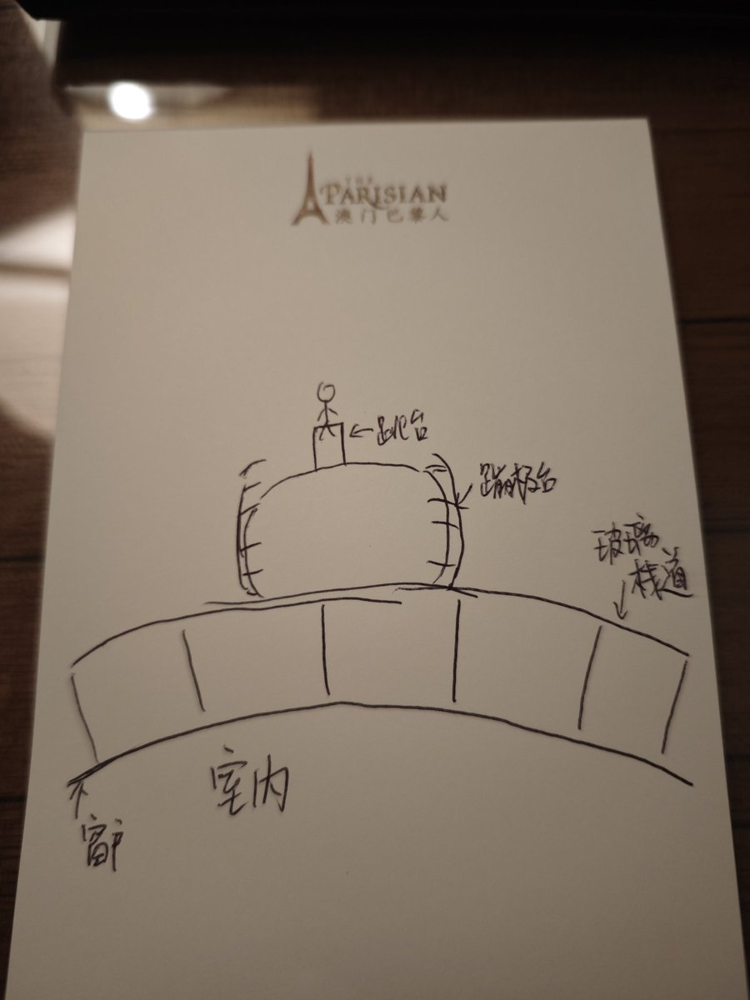

我觉得蹦极更多的是心理刺激，并不是跳楼机那样疯狂上下的失重感和超重感交错的生理刺激，体感上的刺激反倒是其次的。因为你在旁观者角度看起来哇这人跳下来了肯定有很强的失重感吧，但是真的站到那个半米宽的跳台上，看着地下几百米的高度，我就会想"一会的失重感会不会很恐怖，我能承受住吗，会不会绳子断掉…"
这时候的头脑风暴不亚于致幻剂的药效（仅指对思维强度的影响，不考虑思维的内容和视觉内容），或者我们可以理解成一种内源性焦虑，就是认为只要一件事失去了我的掌控我就会害怕发生不好的事。所以有些人站在玻璃上不恐高，但是站在跳台那他又不敢跳了又回来了。
我其实也有这种内源型焦虑，但之前有一个群友的一句话让我颇受裨益：有时候你只差的是作出决定的那一步，冲出去把这个决定做了，就会发现没什么大不了的。于是我就把手松开掉了下去。
但是在我的脚脱离跳台的一瞬间我就后悔了，0到将近9.8km/h的加速度让我有一种强烈的失重感和濒死感。但在这一秒内我又想，跳都跳了那就好好享受吧！克服了恐惧之后的4~5秒自由落体，我感觉我像一颗要冲到地球上的陨石，风景特别美。之后就是被绳子拉住减速，然后慢速回弹再慢慢落地的过程了没什么好说的。
但真的是一次奇幻的体验，很喜欢，等攒点钱了再来一次(๑╹ヮ╹๑)ﾉ
这时候的头脑风暴不亚于致幻剂的药效（仅指对思维强度的影响，不考虑思维的内容和视觉内容），或者我们可以理解成一种内源性焦虑，就是认为只要一件事失去了我的掌控我就会害怕发生不好的事。所以有些人站在玻璃上不恐高，但是站在跳台那他又不敢跳了又回来了。
我其实也有这种内源型焦虑，但之前有一个群友的一句话让我颇受裨益：有时候你只差的是作出决定的那一步，冲出去把这个决定做了，就会发现没什么大不了的。于是我就把手松开掉了下去。
但是在我的脚脱离跳台的一瞬间我就后悔了，0到将近9.8km/h的加速度让我有一种强烈的失重感和濒死感。但在这一秒内我又想，跳都跳了那就好好享受吧！克服了恐惧之后的4~5秒自由落体，我感觉我像一颗要冲到地球上的陨石，风景特别美。之后就是被绳子拉住减速，然后慢速回弹再慢慢落地的过程了没什么好说的。
但真的是一次奇幻的体验，很喜欢，等攒点钱了再来一次(๑╹ヮ╹๑)ﾉ
